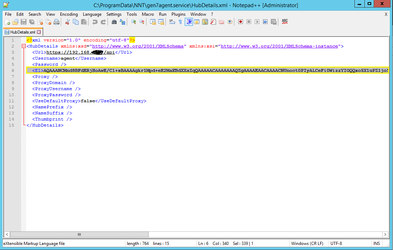
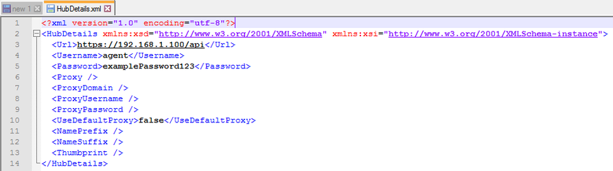
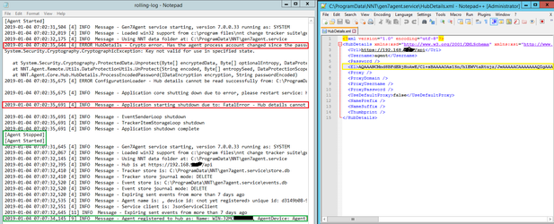
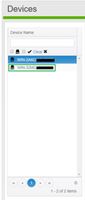

Symptoms
Error message example:# # # # # # # # # # # # # # # # # # # # # # # # # # # # # # # # # # # # # # # # # # # # # # # # # # # # # # # # # # # # # #
# Example Message: # # # # # # # # # # # # # # # # # # # # # # # # # # # # # # # # # # # # # # # # # # # # # # # # # # # # # # # # # # # # # # # 2019-01-04 07:02:35,644 [4] ERROR HubDetails - Crypto error. Has the agent process account changed since the password data was entered? System.Security.Cryptography.CryptographicException: Key not valid for use in specified state. # # # # # # # # # # # # # # # # # # # # # # # # # # # # # # # # # # # # # # # # # # # # # # # # # # # # # # # # # # # # # # # Note: Typically followed by 3 other messages below... # # # # # # # # # # # # # # # # # # # # # # # # # # # # # # # # # # # # # # # # # # # # # # # # # # # # # # # # # # # # # # # 2019-01-04 07:02:35,675 [4] ERROR ConfigurationLoader - Hub details cannot be read successfully from: C:\ProgramData\NNT\gen7agent.service\HubDetails.xml. Error: Key not valid for use in specified state. 2019-01-04 07:02:35,675 [4] INFO Message - Application core shutting down due to error, please restart service: Hub details cannot be read successfully from: C:\ProgramData\NNT\gen7agent.service\HubDetails.xml. Error: Key not valid for use in specified state. 2019-01-04 07:02:35,691 [4] INFO Message - Application starting shutdown due to: FatalError - Hub details cannot be read successfully from: C:\ProgramData\NNT\gen7agent.service\HubDetails.xml. Error: Key not valid for use in specified state.
Cause
This error means that the information in the HubDetails.xml file is
having issues being used with the Agent Service. The specific error above tells us
that the password has already been encrypted elsewhere and can not be used. See
Screenshot Below:
The reason it can not be read by the agent is because each agent must locally encrypt
the password entered into the HubDetails.xml file. This error will
occur when moving a HubDetails.xml file from one agent to another in
a means to simplifying the agent installation. Please see the instructions below on
how to remedy this issue.
Resolution
If you are receiving this error, the NNT Agent is NOT reporting to your hub. This is a critical error and for monitoring to continue, it must be resolved. To resolve this error:
-
Stop the NNT Agent Service. Linux Command:
service nntgen7agent stop
-
On Windows, navigate to the following folder C:\ProgramData\NNT\gen7agent.service
On Linux, navigate to the following folder /var/nnt/gen7agent.service/ - Delete all files located in this folder EXCEPT for the HubDetails.xml file
- Edit the HubDetails.xml file using a program such as Notepad (Windows) or Nano (Linux)
-
Inside the HubDetails.xml file, remove the
entire line containing data with the <E1>
tags. See Screenshot Below:
 -
Once this has been removed, enter the password tags to contain the
following:
<Password>Enter-Password-Here</Password>
- Be sure to enter your Agent password where it states "Enter-Password-Here" between the <Password> tags.
-
Confirm that the HubDetails.xml file contains the proper
information in the correct format, See Screenshot below for an Example:
Read more about HubDetails.xml file.
-
Once this information has been entered properly, please start the NNT Agent
Service. Linux Command:
service nntgen7agent start
-
The following Rolling-Log Information will show that the Agent
was able to read the information and connect the device, see below:
 -
You may also confirm that the device is registered via the Change Tracker Web
Console, see below:
